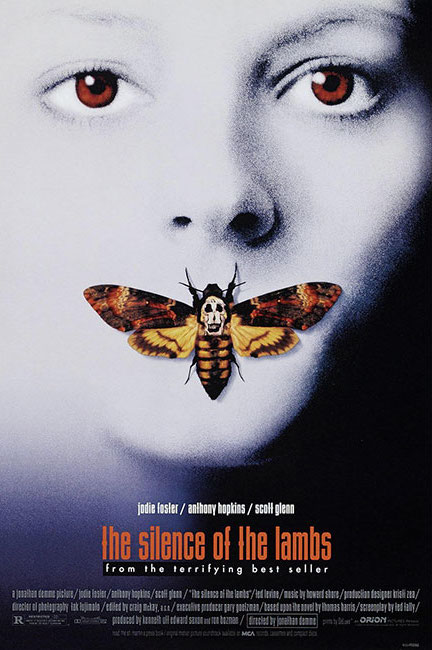
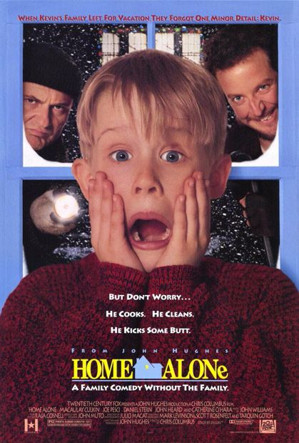
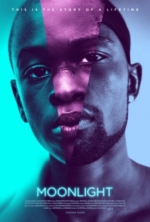
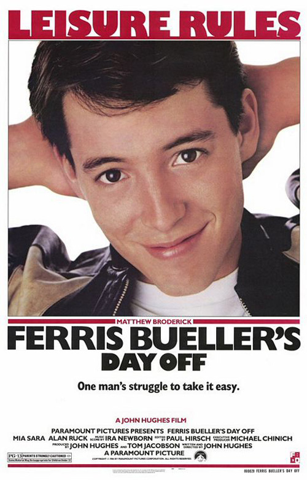

EYE CONTACT
BACK
The purpose of a film poster is to seduce an audience towards a film. This is done by using the most recognizable standard 27” x 41” space to attractively present content of the film.
I have found that one common composition in film posters: a close-up photographic representation of a main character looking directly at the audience while secondary elements expose more of the film’s substance. Some examples of this composition are for Home Alone , a 1990 Chris Colombus film, Ferris Bueller’s Day Off, a 1986 John Hughes film, Moonlight, a 2016 Barry Jenkins film, The Silence of the Lambs, a 1991 Jonathan Demme film.




What is it about character-to-audience and audience-to-character eye contact that sells a film so well?
Business Insider explains that in advertising, a viewer’s eye tends to follow the gaze of a model. When a model looks straight into a camera, it immediately includes the audience into the scene. How does this effect translate to film posters? A character on a film poster looking straight into the eyes of a viewer instantly causes the viewer to feel engaged into the presented scene. Secondary film-revealing elements such as background location, other characters, costumes and objects play a role here to then offer a step into the character’s surrounding universe. This then causes a viewer to desire further discovery into the film. Additionally, New Scientist, after having conducted studies, states that making eye contact with a person will make them seem more attractive. Giving the illusion that an actor is making eye contact rom a poster will make them seem more attractive to a passerby and therefore offer greater success to the film.